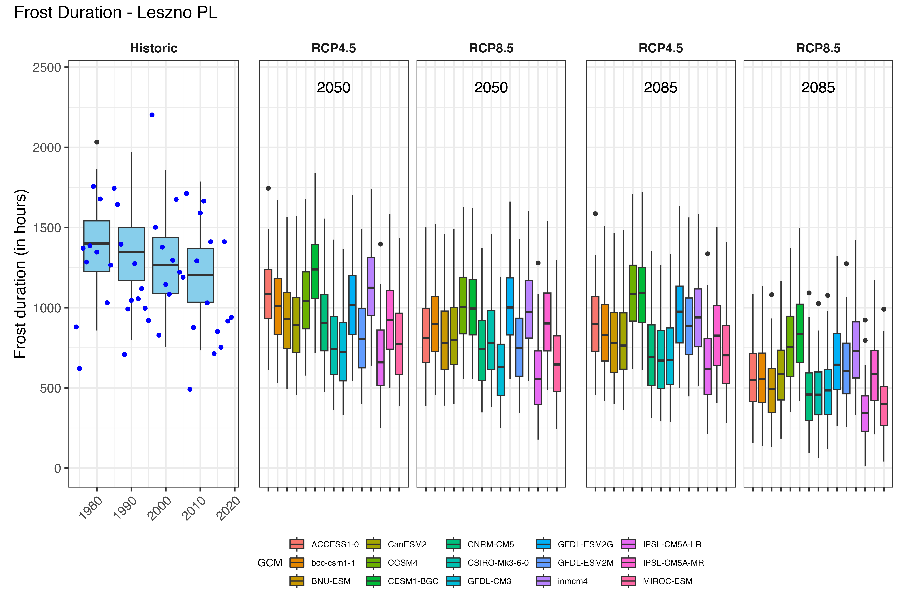

Chapter 13 Plotting Future Scenarios
13.1 Task 1
Produce similar plots for the weather station you selected for earlier exercises.
In order to plot the results of the future scenarios, the
ggpmiscandpatchworkpackages must first be loaded.
In the following, the data about possible future scenarios are visualized with
ggplot.
for(nam in names(chills[[1]]$data))
{
# Extract the data frame.
ch<-chills[[1]]$data[[nam]]
# Add columns for the new information we have to add and fill them.
ch[,"GCM"]<-"none"
ch[,"RCP"]<-"none"
ch[,"Year"]<-as.numeric(nam)
# Now check if this is the first time we've gone through this loop.
# If this is the first time, the ch data.frame becomes the output
# object (past_simulated).
# If it is not the first time ('else'), we add the current data.frame
# to the 'past_simulated' object
if(nam==names(chills[[1]]$data)[1])
past_simulated<-ch else
past_simulated<-rbind(past_simulated,ch)
}
past_simulated["Scenario"] = "Historic"
kable(past_simulated[1:5,]) %>%
kable_styling("striped", position = "left",font_size = 8)%>%
scroll_box(width = "100%")| Season | End_year | Season_days | Data_days | Perc_complete | Chill_CP | Heat_GDH | Frost_H | GCM | RCP | Year | Scenario |
|---|---|---|---|---|---|---|---|---|---|---|---|
| 2001/2002 | 2002 | 120 | 120 | 100 | 68.02902 | 1626.6736 | 1162 | none | none | 1980 | Historic |
| 2002/2003 | 2003 | 120 | 120 | 100 | 61.99433 | 380.7299 | 1567 | none | none | 1980 | Historic |
| 2003/2004 | 2004 | 120 | 120 | 100 | 73.56170 | 576.6271 | 1228 | none | none | 1980 | Historic |
| 2004/2005 | 2005 | 121 | 121 | 100 | 77.40701 | 1710.6912 | 1038 | none | none | 1980 | Historic |
| 2005/2006 | 2006 | 120 | 120 | 100 | 69.60777 | 1054.0242 | 1216 | none | none | 1980 | Historic |
past_observed = chills[[1]][["historic_data"]]
kable(past_observed[1:5,]) %>%
kable_styling("striped", position = "left",font_size = 8)%>%
scroll_box(width = "100%")| Season | End_year | Season_days | Data_days | Interpolated_days | Perc_complete | Chill_CP | Heat_GDH | Frost_H |
|---|---|---|---|---|---|---|---|---|
| 1973/1974 | 1974 | 120 | 120 | 0 | 100 | 76.41768 | 1027.0165 | 880 |
| 1974/1975 | 1975 | 120 | 120 | 0 | 100 | 83.11956 | 897.6264 | 621 |
| 1975/1976 | 1976 | 120 | 120 | 0 | 100 | 66.97020 | 352.8386 | 1371 |
| 1976/1977 | 1977 | 121 | 121 | 0 | 100 | 65.59721 | 1041.0580 | 1285 |
| 1977/1978 | 1978 | 120 | 120 | 0 | 100 | 63.29490 | 1518.9264 | 1387 |
# Extract future data
for(i in 2:length(chills))
for(nam in names(chills[[i]]$data))
{ch<-chills[[i]]$data[[nam]]
ch[,"GCM"]<-nam
ch[,"RCP"]<-chills[[i]]$caption[1]
ch[,"Year"]<-chills[[i]]$caption[2]
if(i==2&nam==names(chills[[i]]$data)[1])
future_data<-ch else
future_data<-rbind(future_data,ch)
}
kable(future_data[1:5,]) %>%
kable_styling("striped", position = "left",font_size = 8)%>%
scroll_box(width = "100%")| Season | End_year | Season_days | Data_days | Perc_complete | Chill_CP | Heat_GDH | Frost_H | GCM | RCP | Year |
|---|---|---|---|---|---|---|---|---|---|---|
| 2001/2002 | 2002 | 120 | 120 | 100 | 77.42519 | 2510.7338 | 896 | bcc-csm1-1 | RCP4.5 | 2050 |
| 2002/2003 | 2003 | 120 | 120 | 100 | 71.61278 | 853.1862 | 1256 | bcc-csm1-1 | RCP4.5 | 2050 |
| 2003/2004 | 2004 | 120 | 120 | 100 | 80.48400 | 1194.5720 | 775 | bcc-csm1-1 | RCP4.5 | 2050 |
| 2004/2005 | 2005 | 121 | 121 | 100 | 83.08626 | 3197.2233 | 695 | bcc-csm1-1 | RCP4.5 | 2050 |
| 2005/2006 | 2006 | 120 | 120 | 100 | 77.74917 | 2007.3718 | 891 | bcc-csm1-1 | RCP4.5 | 2050 |
# Extract the model names
#Models = unique(future_data$GCM)
metric = "Heat_GDH"
axis_label = "Heat (in GDH)"
# get extreme values for the axis scale
rng = range(past_observed[[metric]],
past_simulated[[metric]],
future_data[[metric]])
past_plot=
ggplot() +
geom_boxplot(data = past_simulated,
aes_string("as.numeric(Year)",metric,group="Year"),
fill="skyblue")
past_plot =
past_plot +
scale_y_continuous(limits = c(0, round(rng[2] + rng[2]/10))) +
labs(x = "Year", y = axis_label)
past_plot =
past_plot +
facet_grid(~ Scenario) +
theme_bw(base_size = 15)
past_plot =
past_plot +
theme(strip.background = element_blank(),
strip.text = element_text(face = "bold"),
axis.text.x = element_text(angle=45, hjust=1))
past_plot =
past_plot +
geom_point(data = past_observed,
aes_string("End_year",metric),
col="blue")
y = 2050
future_2050 =
ggplot(data= future_data[which(future_data$Year==y),]) +
geom_boxplot(aes_string("GCM", metric, fill="GCM"))
future_2050 =
future_2050 +
facet_wrap(vars(RCP)) +
scale_x_discrete(labels = NULL, expand = expansion(add = 1))
future_2050 =
future_2050 +
scale_y_continuous(limits = c(0, round(round(1.1*rng[2])))) +
geom_text_npc(aes(npcx = "center", npcy = "top", label = Year), size = 5)
future_2050 =
future_2050 +
theme_bw(base_size = 15) +
theme(axis.ticks.y = element_blank(),
axis.text = element_blank(),
axis.title = element_blank(),
legend.position = "bottom",
legend.margin = margin(0, 0, 0, 0, "cm"),
legend.background = element_rect(),
strip.background = element_blank(),
strip.text = element_text(face = "bold"),
legend.box.spacing = unit(0, "cm"),
plot.subtitle = element_text(hjust = 0.5, vjust = -1, size = 15 * 1.05,
face = "bold"))
future_plot_list<-list()
for(y in c(2050,2085))
{
future_plot_list[[which(y == c(2050,2085))]] <-
ggplot(data= future_data[which(future_data$Year==y),]) +
geom_boxplot(aes_string("GCM", metric, fill="GCM")) +
facet_wrap(vars(RCP)) +
scale_x_discrete(labels = NULL, expand = expansion(add = 1)) +
scale_y_continuous(limits = c(0, round(round(1.1*rng[2])))) +
geom_text_npc(aes(npcx = "center", npcy = "top", label = Year),
size = 5) +
theme_bw(base_size = 15) +
theme(axis.ticks.y = element_blank(),
axis.text = element_blank(),
axis.title = element_blank(),
legend.position = "bottom",
legend.margin = margin(0, 0, 0, 0, "cm"),
legend.background = element_rect(),
strip.background = element_blank(),
strip.text = element_text(face = "bold"),
legend.box.spacing = unit(0, "cm"),
plot.subtitle = element_text(
hjust = 0.5,
vjust = -1,
size = 15 * 1.05,
face = "bold"))
}
both_plots = past_plot + future_plot_list
plot = both_plots +
plot_layout(guides = "collect",
widths = c(1,rep(1.8,length(future_plot_list))))
plot = plot & theme(legend.position = "bottom",
legend.text = element_text(size=8),
legend.title = element_text(size=10),
axis.title.x=element_blank())
plt = plot +
plot_annotation(title = "Heat in GDH - Leszno PL",
theme = theme(plot.title = element_text(size = 16)))
plt#dir.create("Results")
#ggsave("Result/GDH_Leszno.png", width = 30, height = 20, units = "cm", dpi = 600)
